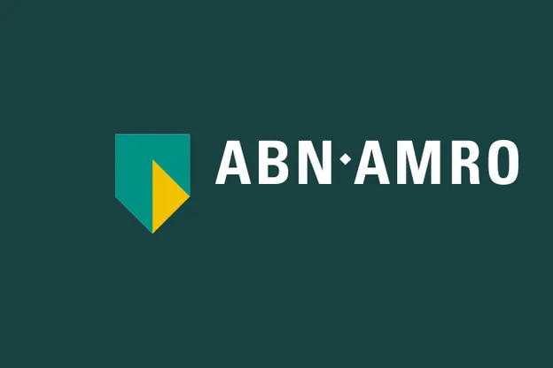
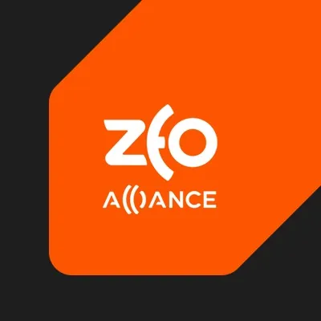

Agentic AI systems
Design and build LLM-powered agents and conversational systems that plug into real APIs, data, and business logic — from an employee virtual assistant at a major bank to conversational platforms covering hundreds of topics.
$ whoami
AI has arrived.
Eugene built this site with Claude in under 2 hours.
Need someone to turn your ideas into something real users rely on?
LLMs, cloud, APIs, Python. Trusted by Netflix, Nike and ABN AMRO.
$ whoami --verbose
Eugene Shemchuk is a freelance senior backend/platform engineer with 11 years of experience building software and AI systems, including roles at Netflix and ABN AMRO. Based in Amsterdam, he specialises in agentic AI, backend platform engineering, and AI product development.
$ cat expertise.md
Eugene Shemchuk connects LLMs and AI models to real APIs, data, and business processes — turning agentic AI ideas into production systems.
Design and build LLM-powered agents and conversational systems that plug into real APIs, data, and business logic — from an employee virtual assistant at a major bank to conversational platforms covering hundreds of topics.
Cloud migrations, API refactors, and platform reliability work across AWS and Azure, built to hold up under production traffic and support further AI capability.
Take AI products from discovery to shipped feature: personas, experimentation, A/B testing, and alignment across engineering, data science, and UX.
Applied machine learning across computer vision (up to 99.9% accuracy), NLP-based product search, and conversational AI, from data prep through production deployment.
$ ls ~/work


Want to build something similar? Book a call
$ ls ~/pet-projects
Smaller builds by Eugene, outside client work.
Telegram bot that stores and serves Eugene's bread recipes in an easy-to-browse format.
Telegram bot that tracked and reported COVID-19 case counts per country.
Telegram bot that converts a song link into a universal link, so friends can open it on whichever music platform they use.
ManyChat automation for lead generation, guiding people through grounding meditation techniques and a flow of associative cards for intuitive work.
ManyChat automation handling lead generation for online tea ceremony and tea education workshops.
iOS app using Swift and Core ML that identifies Nike sneakers from a photo — self-collected training data, model, and app built end to end.
Live Mandelbrot zoom rendered with WebGL in the browser, diving up to 240,000× into the set. Click or scroll to steer it, and switch colour styles and warp.
$ cat references.log
"One of the most exceptional Data Scientists I have encountered in my 14 years of experience... His endless curiosity, combined with his willingness to take risks, leads me to believe there will be no limit to his growth and achievements."
"Eugene has proved himself as a technical and analytical person with a fantastic collaborative spirit and drive."
Additional references from previous employers are available on request.
$ cat faq.md
Eugene is a freelance senior backend/platform engineer based in Amsterdam, specialising in agentic AI systems, backend and platform engineering, and AI product development.
Yes — Eugene is currently available for freelance and contract engagements.
11 years, spanning software engineering, applied ML/NLP/computer vision, and large-scale platform engineering.
Netflix, ABN AMRO, Nike, and SportsShoes.com, spanning the entertainment, banking, and retail industries.
Examples include a conversational AI system reported to save $1M+ a year and lift customer satisfaction by 30%, and computer vision systems reaching up to 99.9% accuracy.
Eugene works fully remote with no fixed location ties. He holds legal residence in Amsterdam, Netherlands, where he is registered as a freelancer (eenmanszaak).
Agentic workflow design, Model Context Protocol (MCP) server development, Claude API and Claude Code, the OpenAI API, prompt engineering, n8n orchestration, and conversational AI/NLP.
Yes — including an MCP server exposing database operations and Claude-powered creative-generation agents as callable tools for Claude Desktop and Claude Code, published as open source on his GitHub.
AWS, Microsoft Azure, and Google Cloud Platform — including building the entire Azure side of ABN AMRO's platform during its AWS-to-Azure migration.
Yes — an iOS image-recognition app built with Swift and Core ML reaching 98% accuracy in shoe-model detection, and a computer-vision security system running real-time inference on an Nvidia Jetson Orin Nano.
Through A/B testing with NPS tracking, held-out validation, error analysis, and human review of low-satisfaction interactions.
At Netflix, cut incident-response SLA from 10 minutes to 1 minute and built issue-discovery dashboards used by 40 analysts across a 200M+ member platform. Delivered a zero-incident cloud migration at ABN AMRO for a virtual assistant used by 22,000+ employees, and improved a model's accuracy from 50% to 97% through iterative training on an Upwork engagement.
Yes — including an MCP server (wobbobobo-mcp-server), a Telegram bot that turns streaming song links into universal links (link-swapp), and a calendar-alert tool built on GitHub Actions and Twilio, all public on his GitHub.
Yes — he led a cross-functional team including engineers, a data scientist, and a UX designer at ABN AMRO, and has mentored and onboarded new hires at both ABN AMRO and Netflix.
A Master's degree in Computer Science from Vinnytsia National Technical University (2011–2016), evaluated as equivalent to a Dutch Master's degree.
Yes — an Incident Responder certification from PagerDuty, dated October 2023.
Ukrainian, English, and Italian, plus basic Dutch.
By email, LinkedIn, GitHub, or by booking a call directly — see the contact section below.
$ contact --init
Available for freelance and contract work. Get in touch to talk about your next AI or agentic system — or book a call directly.